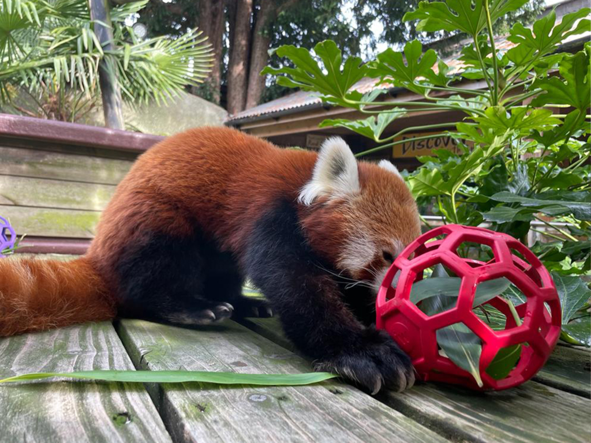
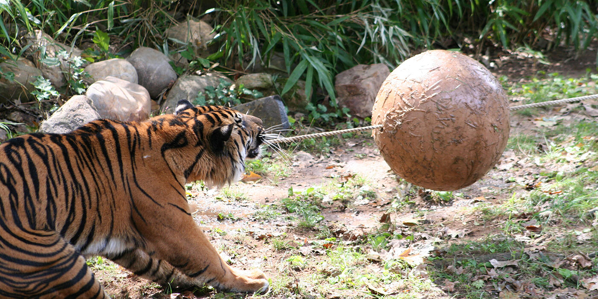
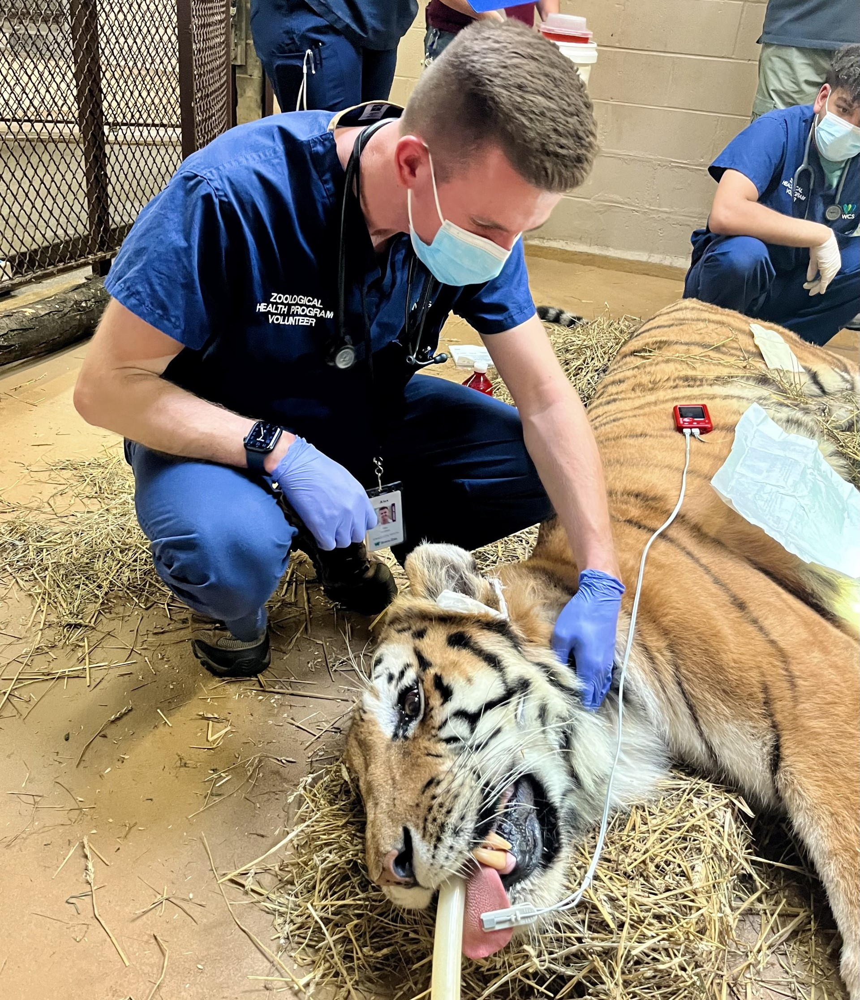

Animal Enrichment
Enrichment gives animals a creative outlet for physical activity and mental exercise, as well as choice and control over how they spend their time. Examples of enrichment include puzzle feeders that encourage animals to forage for food, climbing structures that enhance habitats, and training sessions where animals can interact with keepers.


Veterinary care in Zoos
The Smithsonian National Zoo's Center for Animal Care Sciences provides science-based husbandry, medical care and population management for the health and well-being of all animals at the Smithsonian's National Zoo, as well as for animals at other zoos and in the wild. Center for Animal Care Sciences veterinarians, curators, researchers and animal care staff lead and participate in initiatives focusing on population sustainability, wildlife health and emerging diseases, nutrition, animal behavior and cognition, animal management, and exhibitry through enhanced enrichment and training programs.
